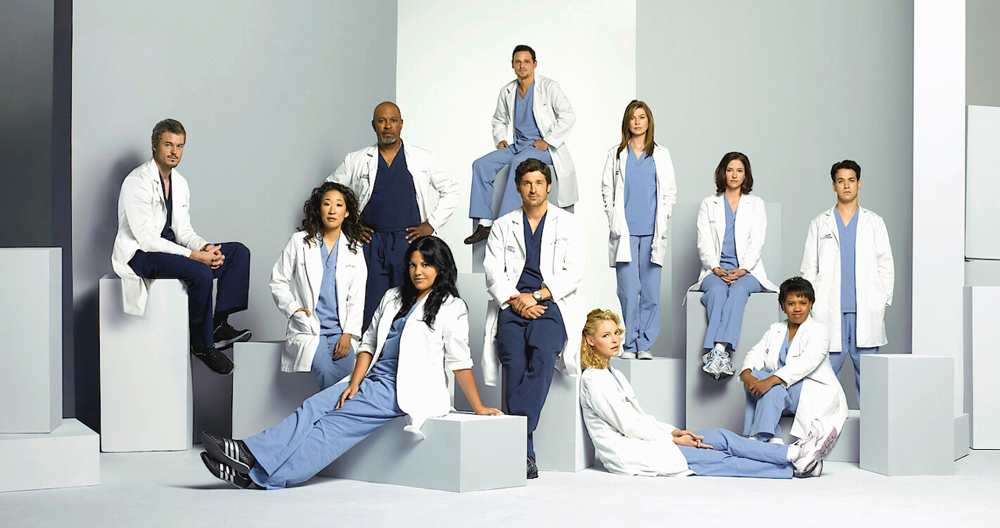

These are the links to my professional page, and my Tableau page
Tableau
Professional Page
Welcome to my page about Grey's Anatomy
I chose this because I've been watching it to procrastinate
So I'm putting that to good use
Below is some unordered lists for you
Here's a list of people I really loved in it and why
Christina Yang
She is in charge of her own future
Look at her hair
Nothing and no one scares her
Feminist icon
Has never done anything wrong in her whole life
April Kepner
She IS my ginger rep
I think about that episode with her baby all the time
Miss girl knows how to work through failure
Why is she so happy when all her choices are so bad
Alex Karev
I would marry this guy so fast
The only guy on this list bc he's cool like that
Watching Arizona make him a sweetheart
Everyone loves a good redemption arc
The kids calling him Dr. Alex I mean come on
Here's a list of people I really hated in it and why
Owen Hunt
That is NOT my ginger rep
I swear that guy hates women
He literally never makes the right choice
I swear he tortures patients just bc he's "army"
He really hates women
Leah Murphy
She ruined all of her friends lives
Filed the stupidest complaint I've ever heard
Why did she introduce the heartbreak plotline
She was fired for a reason
She's so dumb she shouldn't have been hired back
Ellis Grey
She's the worst mom of all time
In literally no stage of life was she a good person
Why is her legacy just crushing all of Meredith's dreams
Honestly the fact she got Alzheimer's and it didn't make her a worse person is all you need to know
She wasn't even a great surgeon, she stole from her blacklisted friend

Back to Top